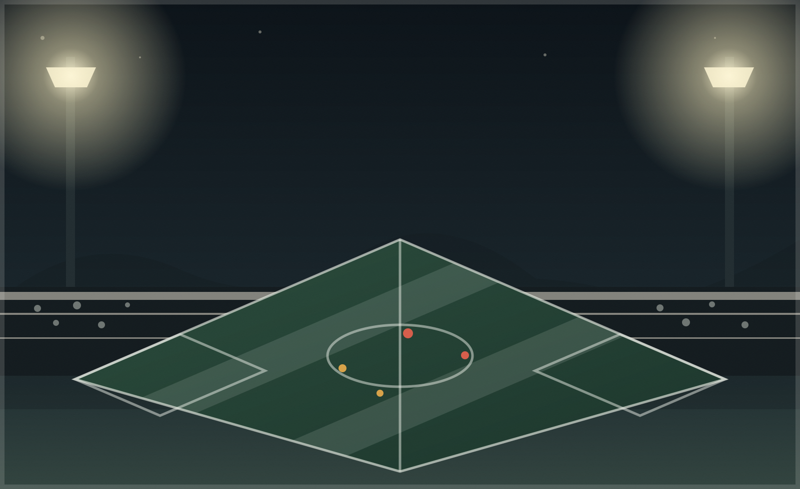
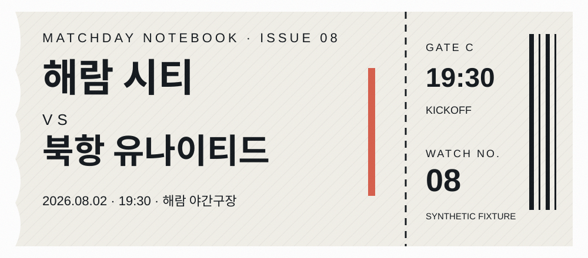
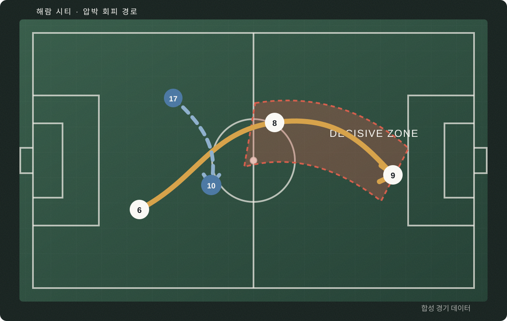
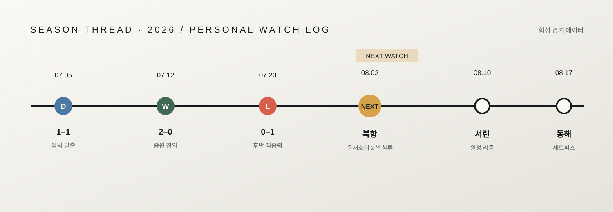

ONE REASON TO WATCH
윤재호가 오른쪽 하프스페이스에서 돌아서는 순간
북항의 1차 압박이 중앙을 닫을 때, 해람은 오른쪽 2선으로 출구를 만든다. 첫 터치가 전진을 향하면 경기의 주도권이 바뀐다.
개인 관전 메모 · 2026.07.27 편집 · 합성 자료
Proposed Business 16 · Personal Sports

MATCHDAY NOTEBOOK · ISSUE 08
해람 시티의 압박을 풀어내는 첫 패스. 윤재호가 공을 받는 방향이 더비의 속도를 결정한다.
ONE REASON TO WATCH
북항의 1차 압박이 중앙을 닫을 때, 해람은 오른쪽 2선으로 출구를 만든다. 첫 터치가 전진을 향하면 경기의 주도권이 바뀐다.
개인 관전 메모 · 2026.07.27 편집 · 합성 자료

MATCH PREVIEW / 경기 전 브리핑
더비의 핵심은 점유율이 아니라 첫 압박을 통과한 뒤 누구에게 시간이 생기는가에 있다.
01 · 압박 출구
02 · 세컨드 볼
03 · 후반 질문

VIEWING NOTES / 관전 노트
화면 속 증거와 내 해석을 분리한다. 무엇을 보았고, 무엇을 느꼈는지.
관찰 증거 · 15′
윤재호가 오른쪽 하프스페이스에서 볼을 기다리지 않고 수비 뒤 공간으로 이동했다. 첫 패스는 중앙이 아니라 측면으로 나갔다.
EVIDENCE내 해석
북항의 압박 방향을 읽고 오히려 공을 받는 위치를 비웠다. 첫 터치가 전진을 향하면 경기 흐름이 바뀔 가능성이 크다.
INTERPRETATION관찰 증거 · 55′
후반 시작 후 윤재호의 시작 위치가 10m 앞으로 조정되었다. 두 번의 빌드업에서 모두 등진 상태로 공을 받았다.
EVIDENCE내 해석
상대가 적응했을 가능성. 등지고 받는 상황이 반복되면 후반 중반부터 다른 루트를 찾아야 한다.
INTERPRETATION관찰 증거 · 75′
해람이 공을 잃은 뒤 6번과 10번 사이 간격이 18미터까지 벌어졌다. 세컨드 볼을 북항에 내줬다.
EVIDENCEMATCH REVIEW / 경기 복기
북항의 전방 압박이 해람의 왼쪽 출구를 닫았다.
윤재호가 오른쪽으로 이동하며 첫 번째 전진 패스 길을 만들었다.
세컨드 볼을 먼저 회수한 뒤 8초 안에 역전 장면이 완성됐다.
해람이 중앙 간격을 좁혀 북항의 마지막 파상공세를 끊었다.
“전반에는 공을 받기 위해 내려왔고, 후반에는 공이 올 자리를 먼저 비웠다.”
예상
윤재호가 오른쪽 하프스페이스에서 전진 방향을 만들면 경기가 풀릴 것이다.실제
전반에는 등지고 받았으나 후반 위치 조정으로 공간을 창출했다. 68분 세컨드 볼이 결정적이었다.불확실
후반 70분 이후 같은 방향성을 유지할 수 있을지는 다음 경기에서 확인해야 한다.
PLAYER LENS / 선수 렌즈
가상 미드필더 · No.10 · 해람 시티
SYNTHETIC MATCH FLOW
오른쪽 하프스페이스
이동수비 뒤 공간 침투
전환중앙 전진 패스
결정세컨드 볼 회수 · 68′
전진 패스의 양보다 수비수를 끌고 나오는 움직임의 방향성이 최근 더 선명해졌다. 북항전에서는 첫 위치 선정이 핵심이 될 것이다.
SEASON THREAD / 시즌 흐름
해람 시티의 시즌을 순위표가 아니라, 내가 계속 확인하고 싶은 관전 질문의 변화로 기록한다.
07.05 · 1–1
07.12 · 2–0
07.20 · 0–1
08.02 · NEXT
나의 매치데이 노트
08오늘의 관전 질문
KEY PLAYER · 10
핵심 경기 흐름
첫 압박 → 오른쪽 출구 → 윤재호 전진 → 세컨드 볼합성 경기 데이터 / Synthetic sports fixture